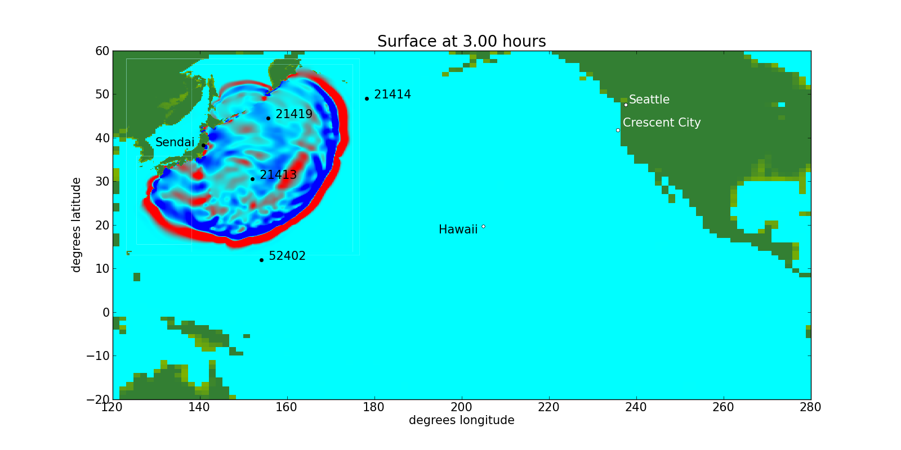
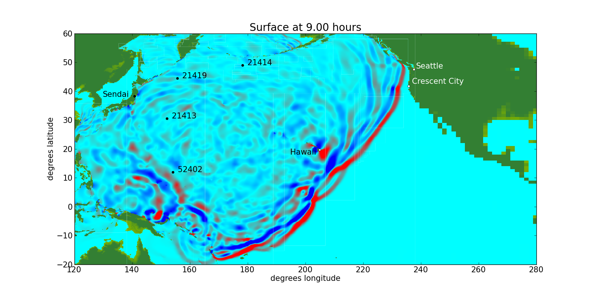

class: center, middle # .blue[Data Visualization] <br> ## Plotting observations or simulations ## on maps or images --- name: goals1 # Goals: - Easily load and explore data, zoom in, extract transects, etc. --- template: goals1 name: goals2 - Share data with collaborators / end users<br> in a way that permits them to .red[(even more) easily] explore data. - Web browser based, online (public or private) - Open source tools when possible --- template: goals2 name: goals3 - Produce publication-quality plots <br> Easy transition from exploration tools, if possible. --- # What kind of data? ### We will consider: - 2D raster data on latitude-longitude grid, - Georeferenced time series data at one or more points, - Time series of 2D raster data --- name: tools1 # Tools: ### There are many, we will look at these: - Python for loading data, [matplotlib](??) for plotting - Creating kml files that can be viewed with many mapping tools, e.g. (Google Earth)[??], (Cesium)[??], (QGIS)[??] --- template: tools1 name: tools2 - Jupyter notebooks for interactive exploration - Exposing it on the web --- # Sample data ## [GeoClaw](http://www.geoclaw.org) Tsunami model (Fortran) ### produces: - Time series of wave height in ocean and flood depth on shore - Gauge output (time series at particular points) - Solution over entire domain at series of times<br> (on one grid, or on many nested patches at different resolutions) - Maximum flow depth (or velocity) on grid<br> (for hazard assessment / realtime warning) --- name: tohoku1 ## Tohoku Tsunami (March 11, 2011) ### To do: - Show propagation across Pacific on Google Earth - Note: would like to do in Ceisum - Simulation to Neah Bay, comparison with tide gauge? --- name: tohoku2 template: tohoku1 ### Placeholder plots:  --- name: tohoku3 template: tohoku1 ### Placeholder plots:  --- ### Outline: - Show sample output for Neah Bay (time series, gauges, inundation) - Use Cesium in notebook to zoom in on region - Use leaflet to select region and make kml file of polygon - View kml file in GE, Cesium - Take screen shot of region to use as background image <br> (is there a better way??) - Load fgmax grid and plot with imshow or pcolor - Plot on top of image obtained from (screenshot?) - Make kml file from imshow with transparent background - View kml file in GE, Cesium - Create png's of time series at several gauges - Create kml to put marker at each gauge location, clicking shows plot --- # To do: - Learn about cartopy, QGIS, basemaps, Pykml --- # Using Cesiumpy First install from https://pypi.python.org/pypi/cesiumpy Then open a notebook and try this: ```python import cesiumpy v = cesiumpy.Viewer() viewpoint = (-124.65, 48.35, 2e4) v.camera.flyTo(viewpoint) v ``` The viewpoint is `(longitude, latitude, elevation)`, set here for Neah Bay, WA. --- # Switch to a Jupyter notebook... You must first have the Jupyter notebook server running in the `notebooks` directory. ```bash cd visualization/notebooks jupyter notebook ``` Assuming the notebook is served on port 8888, this link should work to open the notebook: <a href="http://localhost:8888/notebooks/Cesiumpy1.ipynb" target="top"> Cesiumpy1.ipynb</a> --- ## Possible projects: - View animation of gridded data in Cesium - Make `kmltools` more general, use PyKml? ---